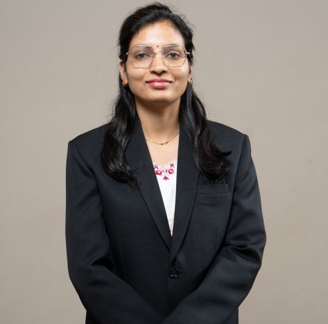

Dr. Anjali Meshram
Assistant Professor
Education
- PhD in Chemcial Engineering from BITS Pillani K K Birla Goa campus
About
Dr. Anjali Meshram is an Assistant Professor in Chemical Engineering department at MIT-WPU, Pune, India. She has a PhD from BITS Pillani K K Birla Goa campus. Her research interest includes engineering of nanomaterial, metal organic frameworks, metal oxide-polymer composites, adsorption, photocatalysis, catalytic reduction, hydrogen production, treatment of real-time industrial effluents and process intensification.
Prior to her current role, Dr. Anjali has worked as an Assistant Professor for two years in the department of Chemical Engineering at Laxminarayan Institute of Technology, Nagpur. She worked as a Senior Research Fellow on BRNS sponsored project in collaboration with BARC, Mumbai. She worked as a Process Engineer at Ingenero Technology Pvt Ltd, Mumbai. She has industrial experience of design and sizing of pressure safety valves. She has 8 publications in high-impact journals and authored 1 book chapter in her credit. She has presented her work at various international conferences.
Research interests
Material engineering, Sustainable technologies, Process intensification, Catalysis and Wastewater treatment.
Publications
- Anjali Meshram, SM Sontakke, 2021. Synthesis of highly stable nanoscale MIL-53 MOF and its application for the treatment of complex mixed dye solutions and real-time dye industry effluent. Separation and Purification Technology 274, 11907.
- Anjali Meshram, SM Sontakke, 2021. Synthesis, characterization and stability of Ni-Ce-Zr trimetallic metal organic framework. Materials Today: Proceedings 46, 6201-6206.
- Anjali Meshram, SM Sontakke, 2022. Rapid reduction of real-time industry effluent using novel CuO/MIL composite. Chemosphere 286, 131939.
- Anjali Meshram, SM Sontakke, 2021. Rapid degradation of metamitron and highly complex mixture of pollutants using MIL-53 (Al) integrated combustion synthesized TiO2. Advanced Powder Technology 32 (8), 3125-3135.
- SD Parashar, Anjali Meshram, SM Sontakke, 2021. Electro-photocatalytic degradation processes for dye/colored wastewater treatment. Handbook of Nanomaterials for Wastewater Treatment, 833-846.
- VS Prabhudesai, Anjali Meshram, R Vinu, SM Sontakke, 2021. Superior photocatalytic removal of metamitron and its mixture with Rhodamine B dye using combustion synthesized TiO2 nanomaterial. Chemical Engineering Journal Advances 5, 100084.
View 3 more publications
- Anjali Meshram, Moses A, Baral SS, Sontakke SM. 2022. Hydrogen production from water splitting of real time industry effluent using MIL-53@TiO 2 composite. Advanced Powder Technology 33 (3), 103488.
- Anjali Meshram, SM Sontakke, 2022. Catalytic reduction of organic pollutants using novel Ni-Ce-Zr trimetallic metal organic framework. Materials Today: Proceedings.
- Ashwin Gaikwad, Anjali Meshram, 2020, Effect of particle size and mixing on the laccase-mediated pretreatment of lignocellulosic biomass for enhanced saccharification of cellulose, Chemical Engineering Communications 207 (12), 1696- 1706
Additional information
- Conferences: 1. Anjali Meshram, Sharad M. Sontakke, Starlaine Mascarenhas, Anasuya Ganguly, Precipitation of Silica from drinking water in CKDu affected areas of Canacona district, Goa, India: A simple, quick and economic method, IWA Water and Development Congress & Exhibition, Colombo, Srilanka. December 1-5, 2019.
- Conferences: 2. Anjali A. Meshram, Sharad M. Sontakke, Effect of solvent on hydrothermal synthesis of MIL-53 (Al/Fe) and its application for dye adsorption, New Frontiers in Chemistry- From Fundamentals to Applications, Goa, India. December 20-22, 2019.
- Conferences: 3. Anjali Meshram, Sharad Sontakke, Synthesis, characterization and water stability test for Ni-Ce-Zr trimetallic metal organic framework, International conference on Material Science, Tripura, India. March 4-6, 2020.
- Conferences: 4. Anjali Meshram and Sharad Sontakke, Microwave synthesis of MOF composite for catalytic reduction, International conference on Nanoscience and Nanomaterials, Feb, 1- 3, 2021.
- Conferences: 5. Anjali Meshram and Sharad Sontakke, MOF derived visible light photocatalyst for simultaneous degradation and hydrogen production from wastewater, 5th International Conference on Applied Surface Science, Palma, Mallorca, Spain, April 25-28, 2022.